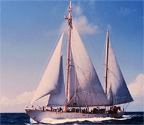

|  copyright - WHOI |
|
Atlantis was the first Woods Hole Oceanographic Institution research vessel and the first ship built specifically for interdisciplinary research in marine biology, marine geology and physical oceanography. Columbus Iselin, her first master and a major influence in her design, felt that speed was not essential; steadiness, silence and cruising range were of primary importance.
Once built WHOI searched for an appropriate name for the research vessel.
A trustee of the Institution, Alexander Forbes, had recently bought a schooner
named Atlantis from Iselin. Mr. Forbes rechristened his schooner
so the new research vessel could be named Atlantis.
The “A- boat” made 299 cruises and covered 700,000 miles, doing all types
of ocean science. In 1966, Atlantis was sold to Argentina, refurbished,
and renamed El Austral. It is used as a research vessel and is crewed
by Argentine naval personnel.